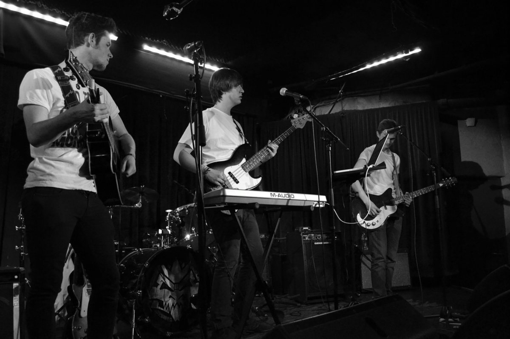

We're Goodbye Stranger - a young band based in London, UK. Our music is guitar-rich synthpop, inspired the shoegaze sounds of the 80s. We take inspiration from the likes of New Order and Peace, to create what we feel is an interesting blend of styles.
Having formed in November 2013, we've released two demos to date - Miles Away and Magnolia. Both of these were met with a fantastic response from countless blogs and internet radio stations, and currently have over 4000 listens combined.
We've taken to the stage of a number of reputable London venues, including The Borderline, The Barfly and most recently the legendary 100 Club, drawing crowds of up to 80 people.
Take a look at the pictures of us playing below:
Contact Us
If you would like to be part of our mailing list enter your email in the form below: